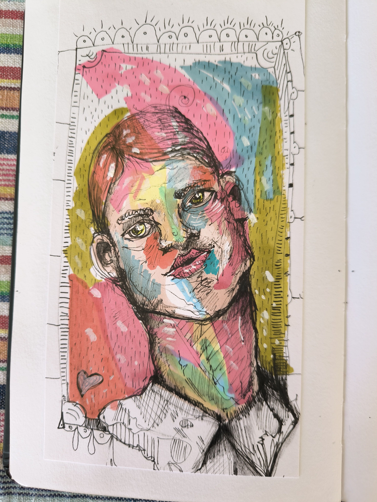
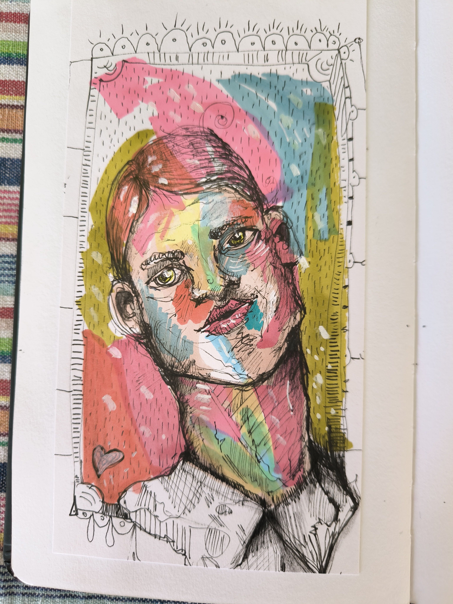
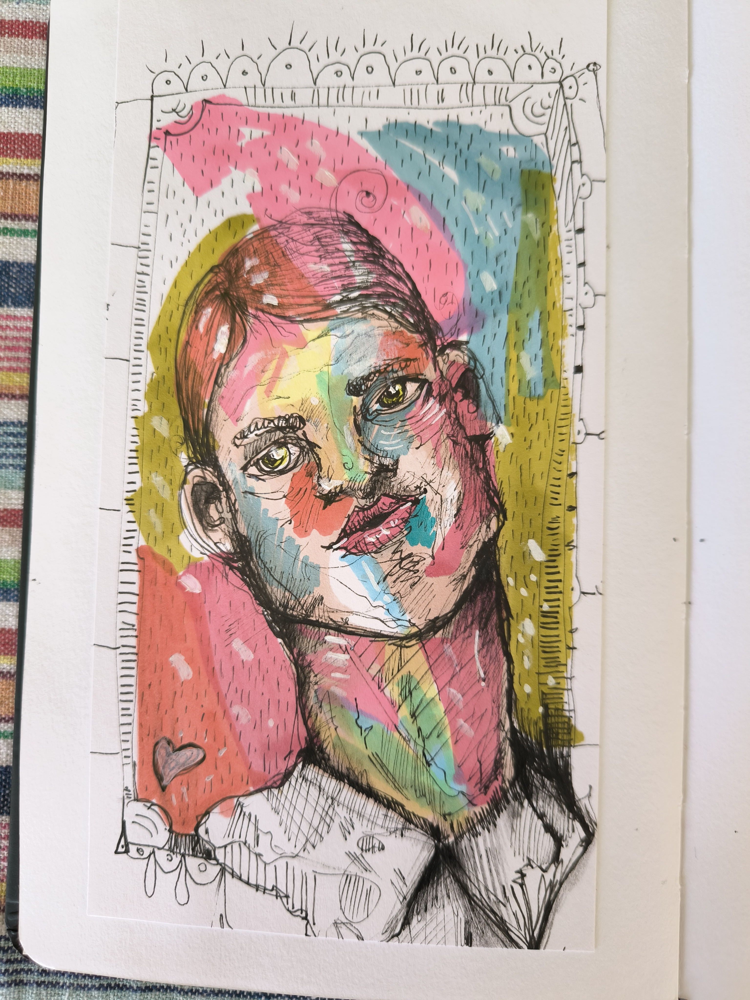

Fragmentos em bruto, ensaios inacabados, falhas bonitas — esta é a parte que raramente se mostra.
Não são obras acabadas. São respirações.
Esboços que falam antes de serem entendidos.
Cada falha é uma fresta. Cada risco, um grito silencioso.
Este diário não busca ordem — ele confessa.
É aqui que a arte se desarma. Onde o caos é bem-vindo.
Se não fizer sentido... é porque ainda está vivo.
Isto não é um portfólio.
É um grito com pixels.
Se estás à procura de coerência, volta pro LinkedIn.
Aqui é zona livre de filtros e senso comum.
Cada traço foi feito com raiva, café e talvez um gato na mesa.
O perfeccionismo foi expulso à força.
Este sketchbook é mais terapia do que arte.
Mais manifesto do que currículo.
Se não te confundiu, volta e lê de novo.
